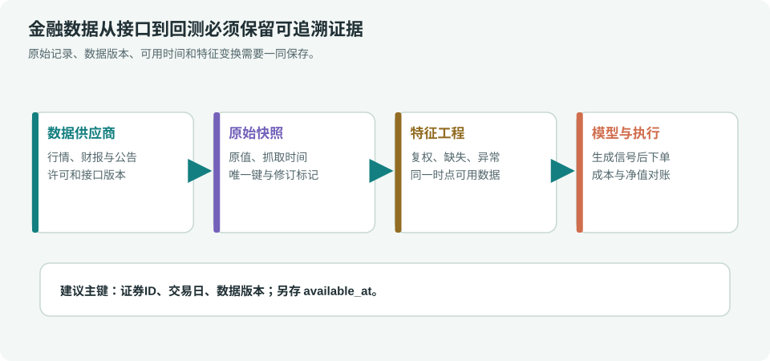
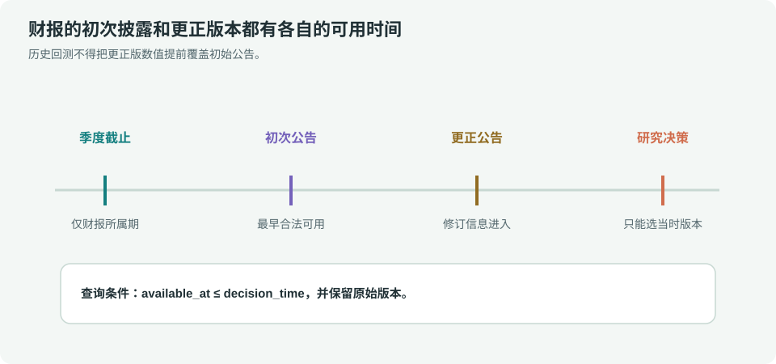

CHAPTER 23 · POINT-IN-TIME DATA
金融数据工程：获取、复权与时点数据库
在可靠量化研究中，知道一条数据何时可用，与知道它的值同样重要。
财报截至3月底，为何4月初的策略不能用它？
一家公司2026年第一季度报告覆盖到3月31日，但可能要到4月底才正式披露。若回测在3月31日就使用该季度净利润构造排名，相当于历史交易者预知未来。同样，当公司于5月更正财务数据后，研究数据库若直接以更正值覆盖4月原始值，也会改变过去投资者不可能提前知道的信息。
数据获取和处理的首要目标不是下载最快，而是保证来源、时间、版本、单位、证券状态与可执行性可追溯。只有在此基础上谈研究效率和预测质量，才有可信度。

Wind、Choice与Tushare：把供应商能力与访问权限分开
Wind与Choice等商业数据库通常涉及具体机构许可和接口授权；Tushare Pro提供日行情、股票列表、交易日历、财报与复权相关API，但不同接口可能有积分门槛、访问频率、调用次数或额外权限限制。安装Python包、获得文档链接，并不等于已经拥有相应字段的使用和再分发权限。
面向实际使用，至少记录数据来源、API名称、查询参数、返回字段、取数日期、数据版本、授权边界和供应商异常状态。不要把Token写进脚本、提交到GitHub或硬编码到前端HTML。最小教学程序应以离线构造数据运行，不依赖平台账号。
| 字段类别 | 必须记录 | 常见故障 |
|---|---|---|
| 证券标识 | 交易所、代码、存续期、历史状态 | 退市股票被漏掉 |
| 价格和成交 | 交易日、原始价、成交额、货币 | 停牌误写为零价 |
| 报表 | 所属期、首次公告、更正版本 | 未来更正值反填历史 |
| 公司行动 | 拆股、送股、股利、因子锚点 | 假回报和不同复权拼接 |
| 取数状态 | 请求权限、失败码、抓取时间 | 接口报错当作数据缺失 |
拆股的价格跳变为什么不是持仓亏损？
假设100股每股100元，市值10,000元。股票发生2拆1后，变为200股每股50元，市值仍为10,000元。若忽略公司行动，只算原始收盘价50/100−1，就会虚构−50%的持有收益。
若拆股前原价100、因子1，拆股后原价50、因子2，末日锚定的调整价分别为50、50。Tushare的复权接口文档提醒，某些前复权结果取决于查询指定的end_date。研究不能把不同日期锚点的结果直接拼接，也不能用未来未知的现金分红重写历史信号。
PIT记录：同一报表字段为什么需要两个甚至更多日期？
一个基本的财务字段至少需要fiscal_end（财务所属期）和available_at（公众或数据系统可用时间），如有更正还需version或修订时间。构造例子：截至2026-03-31的利润初版80，于2026-04-15公开；同一季度5月5日更正为75。4月30日执行的研究查询只能返回80；5月6日才可选择75。

时点数据库应满足约束：版本的available_at不晚于决策时刻。对保留原始和更正记录的数据库，应在可见记录中选取正确版本，不得把最后一版无条件覆盖全部历史。成分股池也要使用历史存续状态，不得仅保留今日仍上市股票。
清洗不是把缺失值统统填零
需要先验证证券代码与交易日唯一性、行情排序、币种与金额单位、复权因子、价格有效性、分红、退市、停牌和数据库修订。把停牌日价格填0会制造巨大虚假跌幅；用未来一年的全样本均值填补去年缺失值也会产生信息泄漏。
技术指标应明确热身期。例如3期简单均线，在只有两天收盘价时不存在完整三期均值，不应拿之后一天价格补充窗口。行业标准化或温莎化必须使用当期股票池与当时可用的信息，而不是用今天所有股票的分布回填过去。
直接可运行：Python标准库的时点查询与调整因子
仓库内离线实验脚本使用纯Python构造数据，无Token、无需安装金融API。下面的代码显示同一会计期间不同可见版本的查询逻辑：
from datetime import date
from quant_lab import point_in_time, adjusted_close
records = [
{"fiscal_end": date(2026,3,31), "available_at":date(2026,4,15), "earn":80},
{"fiscal_end": date(2026,3,31), "available_at":date(2026,5,5), "earn":75},
]
assert point_in_time(records,date(2026,4,30))["earn"] == 80
assert point_in_time(records,date(2026,5,6))["earn"] == 75
assert adjusted_close([100.,50.],[1.,2.]) == [50.,50.]在仓库根目录运行：python3 examples/quant_lab.py；测试命令：python3 -m unittest discover -s examples -p 'test_*.py' -v。环境是Python 3.12或更高版本；示例中的日期、财务数字和价格均不是市场数据。对于真实生产系统还需交易所日历、时区、数据修订通知、许可和持久化快照。
数据准备完成的判据是每个历史决策都可复现
复核题
- 财报属于3月31日，但在4月15日首次公布，4月1日回测能使用吗？
- 拆股后价格减半却没有持有损失，为什么？
- 同一个财务字段被更正，如何保留历史可见的旧数值？
- 复权锚点随查询end_date变化时，为什么不能把不同批次前复权结果直接拼接？
所有结论都应标明数据版本、权限、时间戳和异常处理规则。对无法解释的缺失或不连续行情，应中断计算，而不是自动推断不存在的成交。
接口、口径和原始资料
- Tushare Pro 官方日线行情文档
- Tushare Pro 官方前后复权口径与锚点说明
- Tushare Pro 交易日历接口
- Tushare Pro 访问权限与积分说明
- pandas DataFrame.shift 官方文档
数据平台的权限和接口规范会更新，需以实际账户可用接口与公开文档为准。